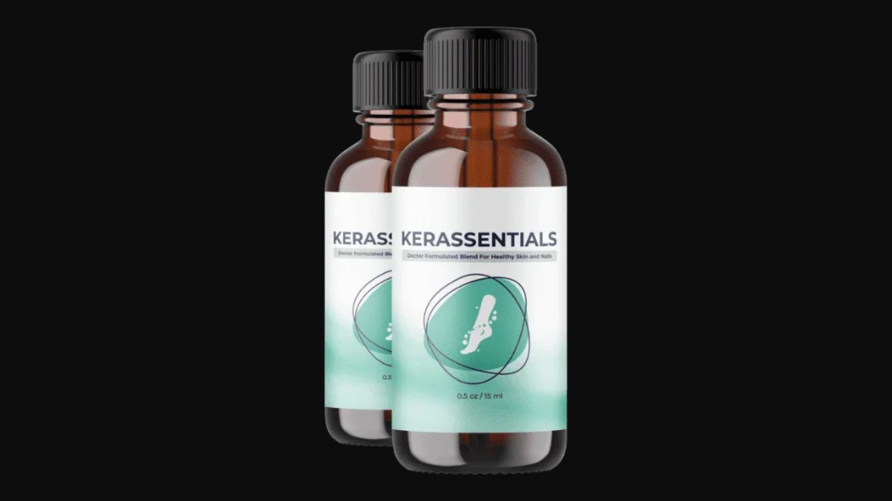

Health Reviews Labs investigated the topical delivery mechanism behind Kerassentials — and why the structural problem with oral nail supplements is the reason most capsules and pills don't work, regardless of what's in them. Here's the honest breakdown.
▶ Watch the full Kerassentials video review before deciding

| Factor | Oral Capsule | Kerassentials (Topical) |
|---|---|---|
| Delivery method | Digestive system → bloodstream | Direct to nail bed |
| Dose reaching target | Fraction of original | Full concentration |
| Digestive bottleneck | Yes — significant | None |
| Format | Capsule, daily | Oil serum, twice daily |
This is the structural problem with oral-only nail supplements that no amount of better ingredients can fix: nail fungus lives under and within the nail plate — a dense, mostly impermeable layer of keratin. When you swallow a capsule, those nutrients travel through your digestive system, get absorbed into your bloodstream, and have to circulate all the way to the nail bed before they can do anything. By the time anything meaningful reaches the site of infection, it's a fraction of the original dose.
Dermatophyte fungi — the organisms responsible for the vast majority of nail infections — colonize the space between the nail plate and the nail bed, and within the nail plate structure itself. This location is specifically sheltered from the bloodstream by the nail's dense keratin matrix, which is precisely why oral supplements struggle to deliver enough active compounds to make a difference. Topical delivery bypasses this problem entirely by applying antifungal compounds directly to the nail surface and surrounding cuticle.
Kerassentials uses an oil-based carrier — chosen because oils penetrate the nail plate's lipid-soluble keratin matrix far more effectively than water-based formulations. The essential oils in the formula are lipophilic, meaning they dissolve readily in the nail's oil-compatible layers rather than sitting on the surface. Tea Tree Oil's terpinen-4-ol, the active antifungal compound, reaches the dermatophyte fungi directly. The supporting carrier oils simultaneously hydrate and strengthen the nail bed and surrounding skin, addressing both the infection and the structural damage it has caused.
One of the most researched natural antifungal compounds, effective specifically against dermatophyte fungi via terpinen-4-ol's mechanism of disrupting fungal cell membrane integrity.
Adds additional antimicrobial action alongside Tea Tree Oil while supporting circulation in the surrounding cuticle and skin.
Eugenol content provides a second antifungal mechanism that works complementarily with Tea Tree Oil's terpinen-4-ol pathway.
Supplies the nail bed with omega-3 fatty acids essential for rebuilding healthy keratin structure damaged by the fungal infection.
Delivers hydration and soothing support to the surrounding skin, which is often irritated and compromised alongside infected nails.
Antioxidant protection for new nail growth forming beneath the damaged nail, supporting healthy regrowth as treatment progresses.
Kerassentials addresses the single most important problem in nail fungus treatment — delivery — by applying antifungal compounds directly to where the infection lives rather than hoping enough of an oral dose survives the trip through your digestive system. For anyone who has tried oral nail supplements without seeing meaningful results, the topical-first approach here addresses the structural reason those didn't work.
Tea Tree Oil Antifungal Serum · 60-Day Guarantee
→ Click Here for Official SiteThe first sign of progress — new nail growing in at the base showing less discoloration than the affected portion.
Cuticle and surrounding skin hydration and condition visibly improve as carrier oils and Aloe Vera take effect.
As the nail grows out completely, the full extent of improvement becomes visible across the whole nail plate.
The 8-12 week timeline isn't a marketing claim — it's the biological reality of nail growth. A toenail takes roughly 3-4 months to grow from base to tip. Visible improvement tracks with how fast new, healthy nail replaces the damaged portion.
Reduced discoloration at the nail's growing edge is the most consistently reported first change, typically noticeable within two to three weeks of twice-daily application. Improved surrounding skin condition tends to follow within the first month. The most meaningful results — full nail appearance improvement — align with the 8-12 week natural nail growth timeline. Users who abandon treatment at 4-6 weeks, before the nail has had time to grow out, are the most likely to report being underwhelmed.
Pricing reflects typical official-site structure — confirm current pricing on the official site before purchase.
Natural Nail Serum · 60-Day Guarantee
→ Click Here for Official Site